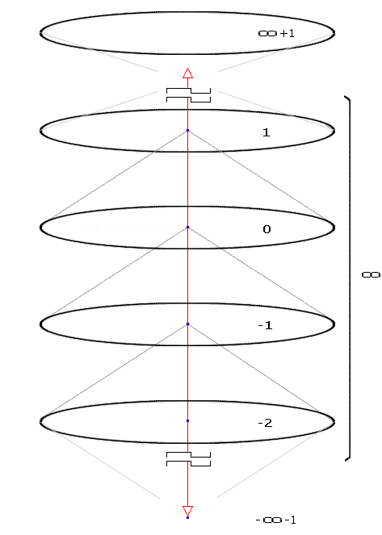
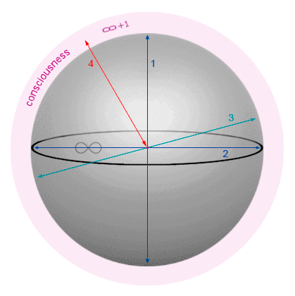

full contents of the book:
Nothing & Dot (Prolog)
Purpose
Contemplated
Entity
Consciousness
Two-Aspect (dualistic) Entity
Fourth dimension and ...
Society and Humanity
Fifth dimension and ...
Firstoccurence
Act of the “I”
The Proc.of study.the Act of "I"
The Meaning of Being
Development of Entity
The Collective Reality
the Entity Development System
Echo (Reflection)
Real Aspect of the Global I
About Worldview
Space-Time
Attitude toward Yourself
Attitude toward your body
Laziness
Fear
Hope (...for Miracle)
Adaptation
Identity of Personality
Relation [ Reason | Body ]
Free Will
Hard problem of Consciousness
Indistinguish and Identity
Matter
Gnoseology
Epistemology
Separation
to the home page
— Chapter Seven —
————————————————————————————
————————————————————————————
THE FOURTH DIMENSION AND FOUR-DIMENSIONALITY
to attempt to understand, it is necessary to study the chapters:
Contemplated, Consciousness, Two-Aspect Entity.
2D projection (from slice "0" to structure view)

fig. 8
(Unicus – sphere – four-dimensionality, along the axis of the fourth dimension, in the direction “inward and outward”)
"Consciousness" is thus accessible to analysis, that is, it does not belong to the category of "incomprehensibility", if we have "gotten to It logically" and through research (see fig. 8). All this, in general, can be called the Manifestation of the "Entity", which means that this is really not the limit, based on the provided possibilities
Level “0” is the starting point and place of our investigations. Level 1 is the supposed external, that is, the ‘past’, based on our manifest reality. All levels with a minus marker are internal (-1, -2), that is, precisely those that we ‘touched’ in this investigation (page 41);
The structure of the four-dimensional space fully corresponds to the Solipsistic World Order, which implies the Condition “There is only I”, and nothing more – the rest is not provable and does not actually exist. This teaching is extremely logical and therefore beautiful as Truth. The idea of Solipsism is ~2500 years old – many recognize it as fundamental, because it is considered irrefutable. At this stage, our research does not go beyond the framework of Solipsism, but – we have not finished the research, and have no right to allow even a shadow of bias. We are interested only in facts, and we will do everything to find answers to the questions posed here. “It’s not evening yet, gentlemen…”;
* * *
In three-dimensional space, the fourth-dimensional axis is the “inward and outward part of the line” that breaks off due to dimensionality mismatch. The inward part of the line is also the Axis of Data Flow, used (and using now) by the “I” when extracting experience reality

fig. 9
(4th dimension axis in 3D space is represented by the red line 4)
We know from practice that the idea of four-dimensionality cannot cause any particular burden. In order to avoid difficulties in ‘Understanding the “I”’ or studying the structure of the World in the future, it is better to understand this now, otherwise you will encounter incomprehensibility. But, after realizing it will turn out to be fairly simple, but the most important thing is that at the moment of realizing you will acquire a special advantage – the ability to think in completely different categories using four-dimensionality, and until the reorganization of the Reason does not occur, further reasoning will have an inaccessible meaning, and will not be understood by you properly – as it is necessary;
The Dimensionality Barrier is insurmountable without Knowledge of the Method and a clear understanding of each subsequent structure; True Knowledge does not come by itself, but it can be acquired if you study with special interest, have a desire and show intention. The real and factual, anything, always has logical, explainable grounds and this is especially true for knowledge and experience;
The awareness of Four-dimensionality can be facilitated by a look from one and every point in the volume of three-dimensionality. This appears to be the fourth direction ‘inside and out’ and is accessible only to Creatures and things that correspond to the ‘Four-dimensional Nature of Reason’. That is, if the Reason of a Creature does not have the special functions necessary for the awareness of Four-dimensionality, then the Space realized
Every point in Space of any degree of dimensionality is potentially an intersection of All dimensions;
For example, a person who is aware of five dimensions understands that each point in four-dimensional space is a five-dimensional integration. That is, in his view, the axes of five dimensions pass through each of them. By analogy, each point in three dimensions is an intersection of four axes for a being who is aware of four dimensions. This is a natural attitude towards points in any space;
Let us formulate it differently: All points of any Space are located in a General Structure of infinite degree of dimensionality (and complexity, which is the same. Complexity, as Nesting, is provable and indicates a pattern related to dimensionality … since chaos is impossible);
We often come across the fact that Dimensions are relevant exclusively for the Alives, and can be used only by the "Alive Beings" ("World for the Alives"), because only the "I" (the 'Real aspect of the Entity') affects the "Consciousness" and, in contrast to this: Objects do not have Will, cannot act independently and do not have the property and ability to realize Reality. Moving, anything (and anywhere) is a detail of the realization of Reality, and only the Alive (!) can be Present (Or, Assuming - but then This does not exist, there are only Conditions of a specific wave applicable to pure Ideas) can assert this;
It should be understood that the awareness of Dimensionality is comprehensible and acquired as Knowledge and Experience, and this applies not only to the understanding (figuratively) of the logical structure, but also to the ability of geometric representation of a strictly defined and corresponding ‘construction’, an order of magnitude more complex – in comparison with the subordinate, (younger), subsidiary structure (...like part of the method only);
However, does it have to be space? What are we talking about? – We imagine space as a volume, the closest ones belong to this category, that is, the fourth and fifth, but there is the second (plane), the first (straight line) and zero (point). With our level of development, we are not yet able to think about the possibility of some other dimensions, below the point, or with a minus value, like minus first, minus second, but if we are able to think about it, then they exist, but there are no Ideas about their 'meaning'.
It is obvious that at the moment we cannot adequately discuss this, and in order not to make mistakes, it is better to stop at the fact that negative dimensions cannot exist
read next chapter >> << back